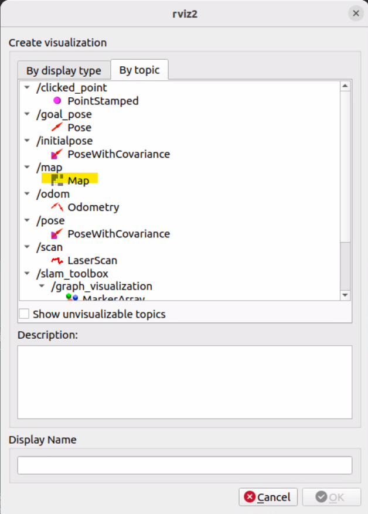
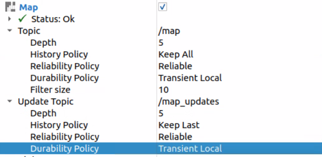
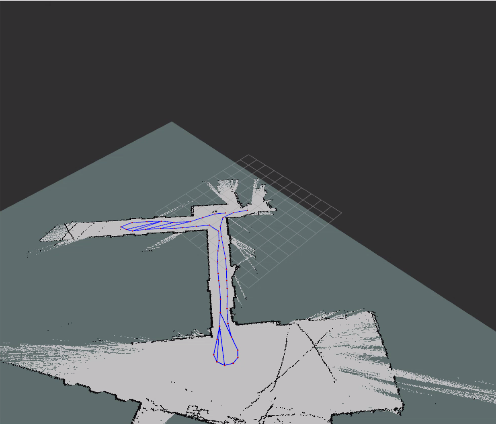

SLAM Toolbox¶
This page shows how to run SLAM Toolbox on the RoboRacer and visualize the map in RViz2.
🎥 Video Walkthrough¶
Important
You must have the controller powered on and connected before starting SLAM. If the controller is not connected, the vehicle will not publish drive data and SLAM will not begin building a map.
Note
Run the slam alias to start SLAM Toolbox:
slam
What slam runs:
ros2 launch slam_toolbox online_async_launch.py \
params_file:=/home/nvidia/f1tenth_ws/src/f1tenth_system/f1tenth_stack/config/f1tenth_online_async.yaml
If your RoboRacer name is f1-wsu-1, your path would look like:
ros2 launch slam_toolbox online_async_launch.py \
params_file:=/home/f1-wsu-1/f1tenth_ws/src/f1tenth_system/f1tenth_stack/config/f1tenth_online_async.yaml
Run Steps¶
1️⃣ Bringup (Terminal 1)¶
Start the car stack (sensors + drivers + base nodes).
cd ~/f1tenth_ws
source /opt/ros/humble/setup.bash
source install/setup.bash
bringup
2️⃣ Turn On and Connect Controller¶
Power on the transmitter
Confirm it is bound to the vehicle
Verify you have steering and throttle response
SLAM will not build a map unless the car is moving.
3️⃣ Start SLAM Toolbox (Terminal 2)¶
Open a separate terminal and run:
cd ~/f1tenth_ws
source /opt/ros/humble/setup.bash
source install/setup.bash
slam
4️⃣ Open RViz2 (Terminal 3)¶
Open another terminal (often on your laptop) and run:
source /opt/ros/humble/setup.bash
rviz2
Configure RViz2¶
After RViz2 opens:

2️⃣ Add Map Display¶
Click Add
Select Map


Then configure the Map display:
Topic → make sure it is:
/map
Topic → History Policy →
Keep AllTopic → Durability Policy →
Transient LocalUpdate Topic → Durability Policy →
Transient Local



5️⃣ Drive the Car to Build the Map¶
With SLAM Toolbox running and RViz2 open, use the PlayStation controller to drive the car around the course. As you drive, you will see the map build in real time in RViz2.
Tips for a good map:
Drive slowly and smoothly to give the LiDAR time to capture accurate scans.
Cover the entire course — drive every section of the track at least once.
It is perfectly fine to drive back over paths you have already mapped — this helps SLAM close loops and improve accuracy.
Try to avoid crashing, as sudden movements can introduce scan errors.
You may notice stray scan lines that appear to extend outside the track boundaries — this is normal and expected. They will not affect navigation.


Example map created while driving the RoboRacer around the course. Stray scans outside the boundary are normal.
Note
When you are satisfied that the map covers the full course, proceed to the next page to save the map.
Common Checks¶
Confirm
/scanis publishing.Confirm controller is connected.
Confirm Fixed Frame is
map.Confirm Map topic is
/map.Confirm Durability is set to
Transient Local.Confirm both machines use the same
ROS_DOMAIN_ID.